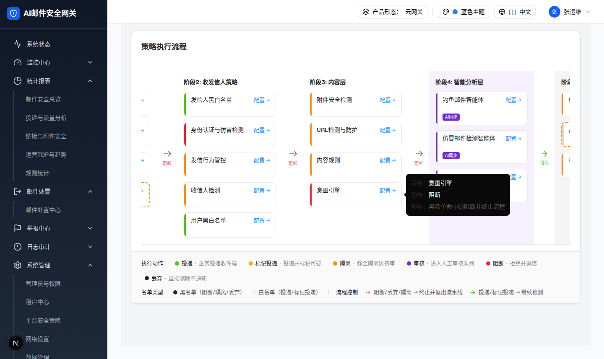

2.1 策略流水线入口卡片 IntentEngine Policy Card
| 交互层级 | 层级0：页面默认态中的策略入口卡片 |
|---|---|
| 触发路径 | 打开 /filter-rules/pipeline，在阶段3内容层定位「意图引擎」卡片。 |
| 浏览器验证 | 卡片根节点 div.w-[220px].cursor-pointer（实测 220×60px，节点数 9），左色条 bg-[#f5222d]（type=forced → 红色）。hover 300ms 出现 Tooltip：「策略：意图引擎 / 动作：阻断 / 影响：黑名单命中则阻断并终止流程」。点击卡片整体或「配置」按钮均打开内容���略抽屉。 |
0交互层级 0：策略卡默认态（hover 可看 Tooltip，点击跳 2.2）

| 元素 | 实际文案/属性 | 交互行为 | 备注 |
|---|---|---|---|
| 卡片标题 | 意图引擎（i18n key pipeline.intentEngine） | 点击卡片整体打开阶段3内容策略抽屉并选中意图引擎 | policy.key = intentEngine，priority 3003 |
| 配置入口 | 配置 + ArrowRight 图标（pipeline.configBtn） | e.stopPropagation() 后同样打开抽屉 | 卡片与按钮共用打开逻辑 |
| 左侧色条 | 红色 #f5222d，宽 4px（w-1） | 无独立交互 | 由 type=forced 推导（强制检测命中即阻断） |
| hover Tooltip | 策略：意图引擎 / 动作：阻断 / 影响：黑名单命中则阻断并终止流程 | hover 300ms 出现 | 「影响」文案复用 pipeline.policyEffectBlock，措辞含「黑名单」与意图引擎语义不完全贴合，见差异 D-08 |
| 统计数据 | 卡片上不显示（极简卡）；源码数据 todayHits 156 / blocked 156 / exempted 0 | - | PRD 未要求卡片统计 |
DOM 树比对结果
| 比对项 | demo 实际 DOM | 提取/预览 HTML | 是否一致 |
|---|---|---|---|
| 根节点 | div.w-[220px].rounded-lg.cursor-pointer（data-slot=tooltip-trigger），220×60px，节点数 9 | .preview-card[data-demo-extracted]，220×60px | 一致 |
| 子结构 | 色条 div.w-1.bg-[#f5222d] + 内容列（标题 span + 配置 button + arrow-right svg） | 色条 + 标题/配置行 | 一致 |
| 关键文案 | 意图引擎 / 配置 | 意图引擎 / 配置 → | 一致 |
| hover Tooltip | [role=tooltip] 三行：策略/动作/影响 | 预览 hover 显示同文案浮层 | 一致 |
| 阶段4 AI 标签 | 未渲染（意图引擎为阶段3，非 AI 卡） | 未包含 | 一致 |